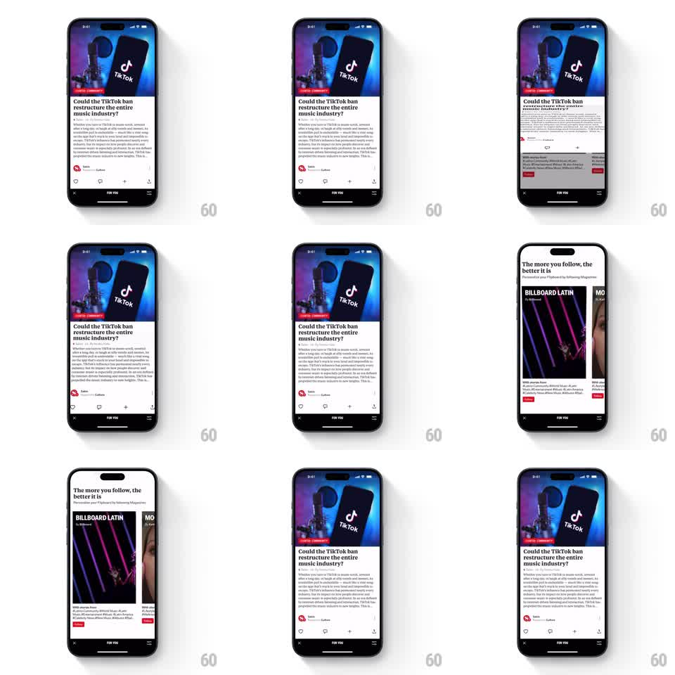

Media
Frame-by-frame

Rebuild this interaction 1:1: Flipboard's page flip - a horizontal drag curls the article card over its horizontal midline like a magazine page, revealing the next story underneath, with a springy settle on release.

Rebuild this interaction 1:1: Flipboard's page flip - a horizontal drag curls the article card over its horizontal midline like a magazine page, revealing the next story underneath, with a springy settle on release. ## Integration Integration: stack-agnostic spec - springs given as stiffness/damping, timed motions as duration + curve; map every value to your framework and animation library of choice. ## Scene Article feed: a full-bleed story card (hero image, headline, source row) above a "FOR YOU" tab bar. Beneath the top card lives the next story, exposed as the flip proceeds. ## Motion spec Pattern: skeuomorphic page flip, drag + settle. - A vertical drag rotates the card's top half around the horizontal center axis, tracked 1:1 to the finger: the panel tips back in 3D (0 to 180deg), its face shading as it turns away. - Past the midline, the card's back face (a dimmed mirrored tint) shows; the next story sits statically underneath from the start. - Release past ~45deg (or with flick velocity) flips the page over with a spring (stiffness 200 damping 20) and the next story becomes the new top card; releasing early springs the page back flat. - The tab bar and status bar never move. ## Calibration - The fold stays perfectly horizontal at mid-height - a drifting fold line breaks the magazine illusion. - Shading follows the rotation angle: the face darkens as it turns, the back brightens as it lands. ## Reduced motion Stories crossfade on swipe, no 3D fold. ## Don't miss - The underside is a muted mirror of the front, not blank white. - The spring finish has a small settle wobble (+-2deg) - the paper coming to rest is the signature.